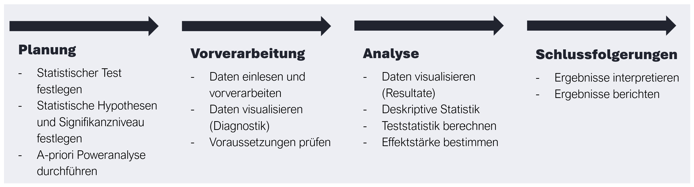

Mit t-Tests für unabhängige Stichproben wird untersucht, wie sich zwei voneinander unabhängige Gruppen in einem intervallskalierten Mass unterscheiden, wenn die Populationsvarianz unbekannt ist.
Typische Fragestellungen:
Wie unterscheiden sich Personen mit der Diagnose von Personen ohne Diagnose X in der Fähigkeit Y?
Wie unterscheiden sich Personen mit einer hohen Ausprägung eines Persönlichkeitsmerkmals von Personen mit einer tiefen Ausprägung in Fähigkeit Y?
Wie unterscheiden sich ältere Personen von jüngeren Personen in der Einschätzung von Y (z.B. Lebenszufriedenheit)?
Wie unterscheiden sich Personen, die ein Treatment erhalten haben, von Personen, welche dieses Treatment nicht erhalten haben (Kontrollgruppe) in der Symptomausprägung Y?
Fragestellung: Welchen Einfluss hat eine positive Stimmung auf die kognitive Leistung gemessen im Stroop Task oder im Running Span Task?
Typische Aussage: The results revealed that the positive mood group performed significantly worse on the running span task, \(t(174) = 2.14, p < .05\), but there were no differences between the groups on the Stroop task, \(t(173) = 0.54, p = .59\).
9.2 Voraussetzungen
Voraussetzung
Erklärung
Vorgehen bei Verletzung
Unabhängigkeit der Messwerte
Die Messwerte innerhalb der beiden Stichproben müssen voneinander unabhängig sein. Das bedeutet, bei beiden Stichproben muss es sich um einfache, voneinander unabhängige Zufallsstichproben handeln.
Unabhängigkeit der Gruppen/Stichproben
Die Messwerte müssen zwischen den beiden Stichproben unabhängig sein (unabhängige Gruppen).
Verletzung der Unabhängigkeitsannahme: Die Annahme, dass die Messwerte zwischen den beiden Stichproben unabhängig sind, ist z.B. dann verletzt, wenn die Messwerte in natürlichen Paaren (Geschwister, Messwiederholung) vorliegen. Eine solche Abhängigkeit kann jedoch durch entsprechende Tests kontrolliert werden, indem beispielsweise ein t-Test für abhängige Stichproben verwendet wird, siehe Kapitel: t-Test für abhängige Stichproben
Metrisches Skalenniveau und Normalverteilung (der AV)
Das Merkmal Y, also die AV, muss in den beiden Teilpopulationen stetig und normalverteilt sein. Bei der UV handelt es sich um eine dichotome Gruppenvariable.
Non-parametrische Verfahren: Falls die AV ordinalskaliert ist oder die Voraussetzungen der Normalverteilung nicht erfüllt ist, kann ein non-parametrisches (verteilungsfreies) Verfahren gewählt werden; z.B. Vergleich von zwei unabhängigen Stichproben mit dem U-Test von Mann-Whitney.
Varianzhomogenität / Homoskedastizität
Die Varianzen innerhalb der beiden Teilpopulationen müssen homogen sein. Ist diese Annahme erfüllt, liegt Homoskedastizität vor. Vor allem wenn die Stichproben unterschiedlich gross sind, bietet sich eine empirische Überprüfung der Varianzhomogenitätsannahme an.
- Überprüfung der Varianzhomogenitätsannahme: Der Vergleich von zwei Stichprobenvarianzen kann mit dem F-Test oder dem Levene-Test erfolgen. Da der Levene-Test eine robuste Variante zum F-Test darstellt, werden wir hier diesen verwenden.
- Verletzung der Varianzhomogenitätsannahme: Ist die Annahme der Varianzhomogenität verletzt (Heteroskedastizität), kann als Alternative der Welch-Test verwendet werden, welcher nicht die gepoolten Innerhalb-Varianzen, sondern die beiden unterschiedlichen Stichprobenvarianzen \(\hat \sigma^2_1\) und \(\hat \sigma^2_2\) verwendet.
9.2.1 Unabhängigkeit der Messwerte
Die Messwerte innerhalb der beiden Stichproben müssen voneinander unabhängig sein. Das bedeutet, bei beiden Stichproben muss es sich um einfache, voneinander unabhängige Zufallsstichproben handeln.
9.2.2 Unabhängigkeit der Gruppen / Stichproben
Die Messwerte müssen zwischen den beiden Stichproben unabhängig sein (unabhängige Gruppen).
Verletzung der Unabhängigkeitsannahme: Die Annahme, dass die Messwerte zwischen den beiden Stichproben unabhängig sind, ist z.B. dann verletzt, wenn die Messwerte in natürlichen Paaren (Geschwister, Messwiederholung) vorliegen. Eine solche Abhängigkeit kann jedoch durch entsprechende Tests kontrolliert werden, indem beispielsweise ein t-Test für abhängige Stichproben verwendet wird, siehe Kapitel: t-Test für abhängige Stichproben.
9.2.3 Metrisches Skalenniveau und Normalverteilung (der AV)
Das Merkmal Y, also die AV, muss in den beiden Teilpopulationen stetig und normalverteilt sein. Bei der UV handelt es sich um eine dichotome Gruppenvariable.
Non-parametrische Verfahren: Falls die AV ordinalskaliert ist oder die Voraussetzungen der Normalverteilung nicht erfüllt ist, kann ein non-parametrisches (verteilungsfreies) Verfahren gewählt werden; z.B. Vergleich von zwei unabhängigen Stichproben mit dem U-Test von Mann-Whitney.
Auf die Verletzung der Normalverteilungsannahme und die non-parametrischen Verfahren wird in diesem Semester nicht weiter eingegangen.
9.2.4 Homogenität der Populationsvarianzen (Homoskedastizität)
Die Varianzen innerhalb der beiden Teilpopulationen müssen homogen sein. Ist diese Annahme erfüllt, liegt Homoskedastizität vor. Vor allem wenn die Stichproben unterschiedlich gross sind, bietet sich eine empirische Überprüfung der Varianzhomogenitätsannahme an.
Überprüfung der Varianzhomogenitätsannahme: Der Vergleich von zwei Stichprobenvarianzen kann mit dem F-Test oder dem Levene-Test erfolgen. Da der Levene-Test eine robuste Variante zum F-Test darstellt, werden wir hier diesen verwenden.
Verletzung der Varianzhomogenitätsannahme: Ist die Annahme der Varianzhomogenität verletzt (Heteroskedastizität), kann als Alternative der Welch-Test verwendet werden, welcher nicht die gepoolten Innerhalb-Varianzen, sondern die beiden unterschiedlichen Stichprobenvarianzen \(\hat \sigma^2_1\) und \(\hat \sigma^2_2\) verwendet.
9.2.5 Zusammenfassung
Voraussetzung
Erklärung
Vorgehen bei Verletzung
Unabhängigkeit der Messwerte
Messwerte innerhalb der Stichproben müssen voneinander unabhängig sein.
Unabhängigkeit der Gruppen/Stichproben
Messwerte müssen zwischen den beiden Stichproben sind unabhängig (unabhängige Gruppen)
Metrisches Skalenniveau und Normalverteilung (der AV)
Bei der UV handelt es sich um eine dichotome Gruppenvariable. Das Merkmal Y, also die AV, muss in den beiden Teilpopulationen stetig und normalverteilt sein. Bei der UV handelt es sich um eine dichotome Gruppenvariable.
Verwenden von non-parametrischen Verfahren: Falls die AV ordinalskaliert ist oder die Voraussetzungen der Normalverteilung nicht erfüllt ist, kann ein non-parametrisches (verteilungsfreies) Verfahren gewählt werden; z.B. Vergleich von zwei unabhängigen Stichproben mit dem U-Test von Mann-Whitney.
Varianzhomogenität / Homoskedastizität
Die Varianzen innerhalb der beiden Teilpopulationen müssen homogen sein (Homoskedastizität).
9.3 Grundkonzepte und Vorgehen

Allgemeiner Workflow der Datenanalyse
9.3.1 Planung
1. Statistische Hypothesen und Signifikanzniveau festlegen
\(H_0\): Die Populationsmittelwerte unterscheiden sich nicht (d.h. haben eine Differenz gleich 0) \(\mu_1 = \mu_2\)
\(H_1\): Die Populationsmittelwerte unterscheiden sich (d.h. haben eine Differenz ungleich 0) \(\mu_1 \neq \mu_2\)
Die Hypothesen können auch gerichtet formuliert werden, z.B. die Populationsmittelwerte sind grösser/kleiner.
2. A-priori Poweranalyse durchführen
Vor der Datenerhebung soll eine a-priori Poweranalyse durchgeführt werden. Einerseits kann damit ermittelt werden, wie viel Power (Teststärke) der Test hat, um einen Effekt von vordefinierter Grösse (z.B. einen grossen Effekt von \(d=0.8\)) zu entdecken. Andererseits kann berechnet werden, wie gross die Stichprobe sein sollte, um einen Effekt bestimmter Grösse und eine festgelegte Teststärke zu erreichen.
9.3.2 Analyse
1. Daten einlesen und vorverarbeiten
Zuerst müssen die Daten eingelesen und bereinigt werden. Für den t-Test werden die Daten hier in einem long-Format benötigt.
2. Daten visualiseren
Daten können diagnostisch visualisiert werden, um
fehlende Werte zu entdecken
Verteilungen der Daten visuell beurteilen
die Grösse des Effekts und die Kohärenz der Datenpunkte (Ähnlichkeit der Werte innerhalb einer Bedingung) zu beurteilen
Zur Visualisierung eignen sich Boxplots oder Lagemasse mit Fehlerbalken. Das Lagemass (z.B. Mittelwert oder Median) stellt dabei die durchschnittliche Merkmalsausprägung in den beiden Stichproben dar. Das Streumass (Standardabweichung, Standardfehler, Quartile) zeigt den Streubereich der Daten auf.
3. Voraussetzungen überprüfen
Varianzhomogenität
Der t-Test für unabhängige Stichproben setzt Varianzhomogenität voraus. Dies kann in R mit dem Levene-Test überprüft werden.
Der Levene-Test geht von der Nullhypothese aus, dass sich die beiden Varianzen nicht unterscheiden. Ein nicht signifikantes Ergebnis bedeutet daher, dass sich die Varianzen nicht unterscheiden und somit Varianzhomogenität (sogenannte Heteroskedastizität) besteht. Wenn der Test signifikant ist, wird Varianzheterogenität angenommen.
Falls die Varianzen heterogen (unterschiedlich) sind , müssen die Freiheitsgrade des t-Wertes entsprechend angepasst werden. In diesem Fall kann ein Welch-Test (Welch’s t-Test) verwendet werden, der zur Berechnung der Teststatistik die beiden unterschiedlichen Populationsvarianzen anstatt die gepoolte Innerhalbvarianz nimmt. Dazu wird in R die Funktion t.test()mit der Option var.equal = FALSE genutzt.
4. Teststatistik berechnen
Um zu überprüfen, ob die beiden Mittelwerte signifikant unterschiedlich sind, muss die Teststatistik berechnet werden. Die Verteilung der Teststatistik folgt bei homogenen Varianzen einer sogenannten t-Verteilung (auch Student’s t-Verteilung genannt2), die durch die Anzahl Freiheitsgrade (df) definiert ist.
Um die empirische Prüfgrösse zu berechen, wird die Mittelwertsdifferenz durch den Standardfehler der Mittelwertsdifferenz geteilt:
Die Freiheitsgrad lassen sich für einen unabhängigen t-Test berechnen:
\(df=n_1+n_2-2\)
Nun muss die berechnete empirische Prüfgrösse t auf Signifikanz überprüft werden. Dazu wird der Wert mit dem kritischen Wert der durch die Freiheitsgrade bestimmten t-Verteilung verglichen. Der kritische Wert kann in einer Tabelle abgelesen werden.
Die \(H_0\) wird beibehalten, wenn die empirische Prüfgrösse kleiner als der kritische Wert ist. Die Gruppen unterscheiden sich nicht signifikant bzw. die Gruppenvariable hat keinen Einfluss auf die AV.
Die \(H_0\) wird abgelehnt, wenn die empirische Prüfgrösse grösser als der kritische Wert ist. Die Gruppen unterscheiden sich signifikant bzw. die Gruppenvariable hat einen Einfluss auf die AV.
5. Effektstärke
Die Effektgrösse beim t-Test für unabhängige Stichproben sagt etwas darüber aus, wie gross der Unterschied zwischen den beiden Populationsmittelwerten ist.
Die standardisierte Effektgrösse kann folgendermassen berechnet werden:
Je grösser der t-Wert ist, desto stärker spricht dies grundsätzlich gegen die Nullhypothese.
Meistens werden in psychologischen Publikationen die Stichprobenmittelwerte und ihre geschätzten Populationsstandardabweichungen (Stichprobenstandardabweichungen) sowie die t-Statistik, ihre Freiheitsgrade und ihr p-Wert (also der Wahrscheinlichkeit dieses oder eines noch extremeren Wertes unter der Nullhypothese) berichtet.
Falls der exakte p-Wert sehr klein ist, beispielsweise \(p=0.00000012\) bzw. unter \(0.001\), wird dies folgendermassen notiert: \(p < .001\).3
Personen mit dem Treatment X unterscheiden sich signifikant in ihrer kognitiven Leistung von den Personen ohne Treatment X, \(t(40)=-2.63, p < .001\).
9.4 Anwendungsbeispiel in R
Beispiel: Stimmungesexperiment
In einem Experiment wurden Versuchspersonen entweder in positive Stimmung (Gruppe 1) oder in negative Stimmung (Gruppe 2) versetzt und mussten danach verschiedene Rechenaufgaben lösen. Gezählt wurde, wie viele Rechenaufgaben die Versuchspersonen im Anschluss lösen konnten. Bei der abhängigen Variablen handelt es sich hierbei um einen Indikator für die stetige Variable kognitive Leistungsfähigkeit.4
9.4.1 Planung
1. Statistische Hypothesen und Signifikanzniveau festlegen
\(H_0\): Die Stimmung hat keinen Einfluss auf die Leistung: \(\mu_1=\mu_2\)
\(H_1\): Die Stimmung hat einen Einfluss auf die Leistung: \(\mu_1 \neq\mu_2\)
Das Alphaniveau wird auf \(5 \%\) festgelegt. Da es sich um eine ungerichtete Hypothese handelt, wird zweiseitig getestet.
2. A-priori Poweranalyse durchführen
n1: Anzahl Messwerte Stichprobe 1
n2: Anzahl Messwerte Stichprobe 2
d: Effektgrösse
sig.level: \(\alpha\) (Fehler 1. Art)
alternative: \(H_1\) gerichtet (greateroder less) oder ungerichtet (two-sided)
t test power calculation
n1 = 40
n2 = 40
d = 0.8
sig.level = 0.05
power = 0.9421818
alternative = two.sided
# Stichprobengrösse berechnenpwr.t.test(d =0.8, power =0.8, sig.level =0.05, type ="two.sample")
Two-sample t test power calculation
n = 25.52458
d = 0.8
sig.level = 0.05
power = 0.8
alternative = two.sided
NOTE: n is number in *each* group
Eine Teststärke (Power) von 0.94 bedeutet, dass die Wahrscheinlichkeit, einen tatsächlich vorhandenen Effekt (mit einer Effektstärke von 0.8) zu entdecken, 94 % beträgt.
Um mit einer Teststärke von 80% einen grossen Effekt von \(d=0.8\) zu finden, benötiget es eine Stichprobe von mindestens \(n=26\) pro Gruppe.
9.4.2 Datenanalyse
1. Daten einlesen und vorverarbeiten
Hands-on: Beispieldatensatz Stimmungsexperiment
Daten herunterladen und einlesen
Hier können die Daten innerhalb eines RProjects heruntergeladen werden: Download
# Packages ladenlibrary(tidyverse)# Daten laden und anschauend_mood <-read.csv("data/mood.csv") |>glimpse()
Für den t-Test werden die Daten in einem long Format benötigt. Daher müssen die Daten vom bisherigen wide Format in ein long Format umstrukturiert werden und eine Variable id ergänzt werden.
# Datenformat long erstellend_mood_long <- d_mood |>pivot_longer(cols =c(mood_neg, mood_pos),names_to ="condition",values_to ="performance") |>mutate(id=row_number()) |>select(id, condition, performance)# ID und Gruppenvariable als Faktor definierend_mood_long <- d_mood_long |>mutate(id =as.factor(id)) |>mutate(condition =as.factor(condition))print(d_mood_long)
Mit einem Boxplot kann die Verteilung der Werte noch genauer angeschaut und die beiden Gruppen visuell miteinander verglichen werden.
library(ggplot2)# Boxplotp_boxplot <- d_mood_long |>ggplot(aes(x = condition, y = performance)) +geom_jitter(aes(colour = condition), alpha =0.25, width =0.2) +geom_boxplot(alpha =0, width =0.2, color ="black") +scale_colour_manual(values =c("mood_neg"="red4","mood_pos"="blue4")) +labs(title ="Boxplot Effect of Mood on Performance",x ="Mood Condition",y ="Performance Score") +theme_minimal(base_size =12) +theme(legend.position ="none")p_boxplot
3. Voraussetzungen überprüfen
Der t-Test setzt voraus, dass das Merkmal \(X\) in der Population stetig und normalverteilt ist und die beiden Populationsvarianzen gleich (homogen) sind.
Die Varianzhomogenität (Homoskedastizität) kann mit dem Levene-Test leveneTest(y ~ x, data = data) überprüft werden. Ein Levene-Test mit \(p < 0.05\) bedeutet, dass der Varianzunterschied signifikant ist. Die Nullhypothese, dass die beiden Varianzen auf Populationsebene identisch sind, muss in diesem Fall verworfen werden.
#Levene-Test mit dem package {car}car::leveneTest(performance ~ condition, data = d_mood_long)
Levene's Test for Homogeneity of Variance (center = median)
Df F value Pr(>F)
group 1 3.3508 0.07099 .
78
---
Signif. codes: 0 '***' 0.001 '**' 0.01 '*' 0.05 '.' 0.1 ' ' 1
Der Test ist hier nicht signifikant (\(p=.071\)), daher wird davon ausgegangen, dass die Varianzen in beiden Gruppen homogen sind. Somit kann ein Student’s t-Test verwenden werden.
4. Teststatistik
a. Berechnung Teststatistik von Hand
Im Folgenden wird ein t-Test für unabhängige Stichproben unter der Annahme von homogenen Varianzen “von Hand” berechnet.
# Ausgabe der kritischen Werteqt(0.025, 78) # kritischer t-Wert unterhalb
[1] -1.990847
qt(0.975, 78) # Kritischer t-Wert oberhalb
[1] 1.990847
Nach dieser Berechnung liegt der empirische t-Wert bei \(2.01\) leicht über dem kritischen Wert von \(1.99\). Die Mittelwerte unterscheiden sich daher signifikant auf dem \(5 \%\)-Niveau.
b. Berechnung Teststatistik in R mit der Funktion t.test
Viel einfacher kann den t-Test für unabhängige Stichproben mit t.test(formula = y ~ x, alternative, var.equal, data) berechnet werden.
y: Abhängige Variable (metrisch)
x: Unabhängige Variable (Bedingung oder Gruppenvariable)
alternative: festlegen, ob die \(H_1\) gerichtet (greateroder less) oder ungerichtet (two-sided) ist
var.equal: festlegen, ob die Annahme homogener Varianzen zutrifft (TRUE) oder nicht (FALSE)
Two Sample t-test
data: performance by condition
t = 2.008, df = 78, p-value = 0.04811
alternative hypothesis: true difference in means between group mood_neg and group mood_pos is not equal to 0
95 percent confidence interval:
0.01920551 4.48079449
sample estimates:
mean in group mood_neg mean in group mood_pos
12.40 10.15
Die Mittelwerte der beiden Gruppen unterscheiden sich signifikant auf dem \(5 \%\)-Niveau. Die Nullhypothese, wonach sich die beiden Mittelwerte nicht unterscheiden kann verworfen werden. Die Stimmung beeinflusst somit die kognitive Leistung.
9.4.3 Effektstärke
Berechnung der Effektgrösse (Cohen’s d)
Nun kann noch die Effektgrösse mit cohen.d(formula = y ~ x, data) aus dem Package {effsize} berechnet werden.
# Effektgrösse berechneneffsize::cohen.d(formula = performance ~ condition, data = d_mood_long)
Cohen's d
d estimate: 0.4489995 (small)
95 percent confidence interval:
lower upper
-0.001741657 0.899740658
Die Effektgrösse liegt bei \(d=0.45\). Es handelt sich nach der Taxonomie von Cohen (1988) um einen kleinen (bis mittelgrossen) Effekt.
9.4.4 Interpretation der Ergebnisse
Das Ergebnis ist auf dem \(5 \%\)-Niveau signifikant und die Nullhypothese kann somit verworfen werden: Die Stimmung beeinflusst die kognitive Leistungsfähigkeit. Es handelt sich nach der Taxonomie von Cohen (1988) um einen kleinen Effekt (\(d=0.45\)).
9.4.5 Ergebnisse berichten
“We examined whether the mood condition had an effect on cognitive performance. There was a significant differences between the positive and negative mood condition. Participants in the negative mood condition (\(M = 12.40\), \(SD = 5.61\)) performed significantly better on the task than those in the positive mood condition (\(M = 10.15\), \(SD = 4.32\)), \(t(78) = 2.01, p = .024, d = 0.45\). This indicates a small effect of mood on cognitive performance.”
Eid, M., Gollwitzer, M., & Schmitt, M. (2017). Statistik und Forschungsmethoden: Mit Online-Materialien (5., korrigierte Auflage). Beltz. S. 338↩︎